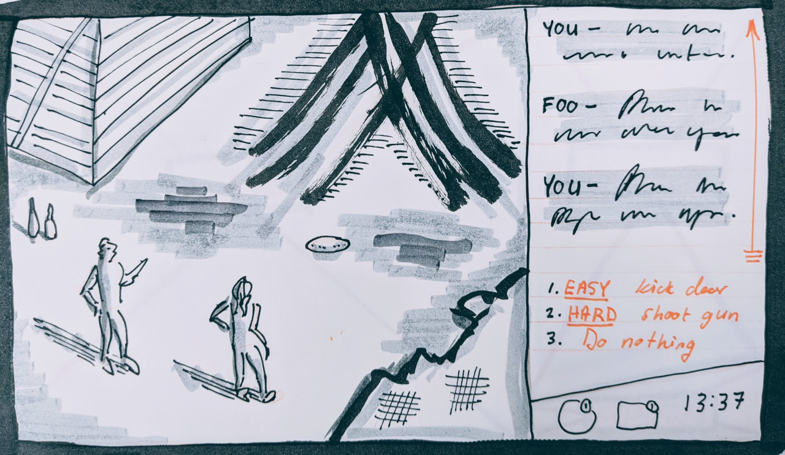

If Disco Elysium was planned today.
In this exercise, I'll simulate the planning stage of Disco Elysium using a variety of prototyping techniques:
Here we try a bunch of screen layouts, colour-coded as follows:
On the left, we split gameplay and conversation down the middle, but it feels like we're giving too much space to the conversation. We try to make it smaller, but is it too small?
Let's try thirds. That looks nice. OK, how about inventory? On the left below gameplay, or on the right below the conversation?
Definitely below conversation, so we can have a nice, large gameplay area. But let's not be all squares. How about a trapezoid? And a ...bit... more space for conversation. OK, that looks good.
Right, that's a good layout. Let's see some rough concept art in it, shall we?
Nice and gritty, just like Revachol.
OK, stop. I know this is based on my novel and all, but is there a way we can test the dialogue before we spend LOADS of time drawing stuff and coding something?
I mean, we already spent LOADS of time on the wireframes...
We've got just the tool.
Twine.
You mean this?
Not THAT kind of Twine...
This next section is Copyright © Alexei Pepers / @ampepers
Don't skip ahead. Click the red Continue button to follow the story...